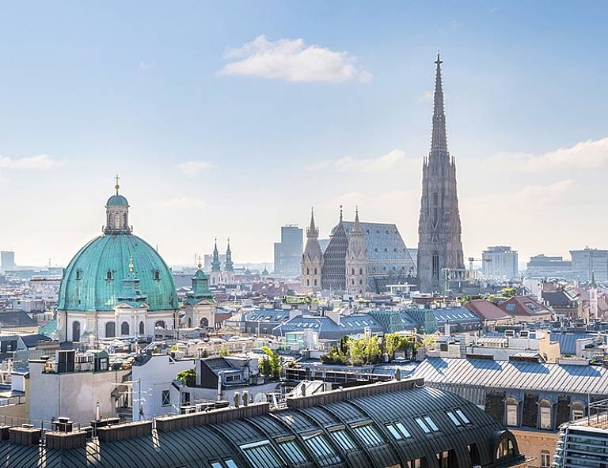
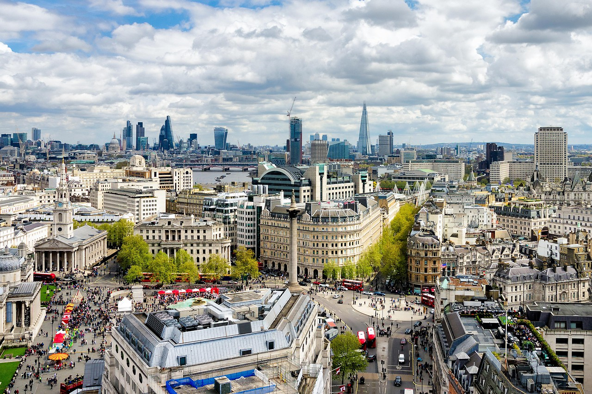
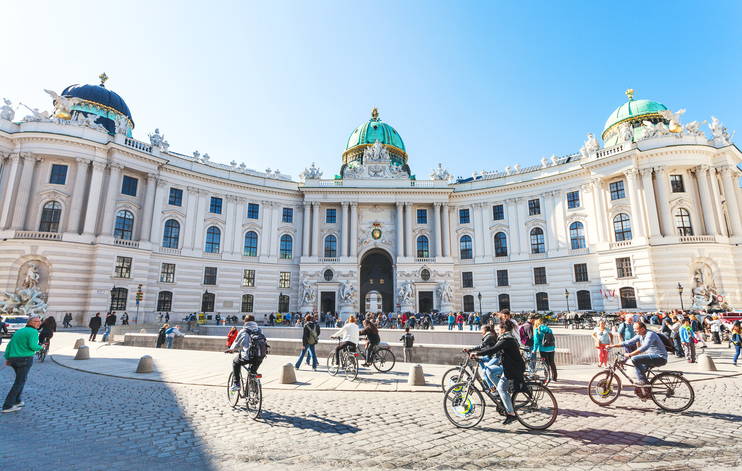

POČETNA |
ISTORIJA |
KULTURA |
POSETITI |
ANKETA |
|
Beč je glavni grad Austrije i jedna od devet austrijskih saveznih država. Administrativno je podeljen na 23 okruga. Sa više od 1.800.000 stanovnika(2.400.000 miliona na širem području grada) je 10. najveći grad Evropske unije, daleko najveći grad Austrije i njeno političko, gospodarsko i kulturno središte. Grad leži na Dunavu u najistočnijem delu Austrije nedaleko od granice sa Slovačkom, Mađarskom i Češkom, na raskršću putnih pravaca sever-jug, povezujući Baltik s Jadranom i zapad-istok, povezujući zapadnu i srednju Europu s jugoistočnom Europom i dalje Azijom. Istorija Beča počinje prije više od 4 tisućljeća čime se područje grada svrstava među najstarije ljudske naseobine na svetu. Beč je tako jedna od najstarijih metropola u srcu Europe, carski grad i mesto ukrštanja raznih kultura i uticaja. Bio je sedište imperatora Svetog rimskog carstva, glavni grad Austrijskog carstva te Austro-Ugarske monarhije kada je i dostigao svoj vrhunac krajem 19. veka i sa oko 2.000.000 stanovnika predstavljao četvrti grad po veličini na svetu (nakon Londona, Pariza i New Yorka), kulturno središte, rečnu luku, industrijski i trgovački centar povezan s češkim, mađarskim i južnoslavenskim zemljama. |
| Pogled na katedralu Svetog Stefana  Panorama grada  |
Bečka svakodnevnica  Beč noću |
POČETNA |
ISTORIJA |
KULTURA |
POSETITI |
ANKETA |